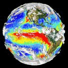

C96_t233_wg37.B1850C_LTso.taiesm2_dev_3b09.HM015
and
f09.B-PI.tn15.cmip6.j01.re
DIAG Set 1 - Tables of global, tropical, and extratropical
DJF, MAM, JJA, SON, ANN means and RMSE
| Domain | DJF | MAM | JJA | SON | ANN |
|---|---|---|---|---|---|
| global | table | table | table | table | table |
| tropics (20S-20N) | table | table | table | table | table |
| southern extratropics (90S-20S) | table | table | table | table | table |
| northern extratropics (20N-90N) | table | table | table | table | table |